SpotterCall is a spotter in your ear. Call out your distance — out loud or with a tap — and it speaks your firing solution back: distance, elevation, and wind, computed on your phone for the rifle you've selected. Hands on the rifle, eyes downrange, no fumbling with a phone.
Everything in this manual is the supporting cast for that one loop: you speak the distance, it speaks your hold.
And everything here was built to one standard: ease of use. SpotterCall lives on the phone already in your pocket — so your holds, your wind, and your air live on a bright, full-color, living screen, not a two-inch gray readout. Range cards carry your own names for your own country — DIAMOND, BIG OAK, FOOD PLOT EDGE — in color, at a glance. The wind isn't a number to decode; it's a dial you can watch move. In the stand, that matters: set up once, prop the phone, and watch the wind work while you wait. You'd be looking at the screen anyway — now it's telling you something.
2 · The Main Screen — Every Control
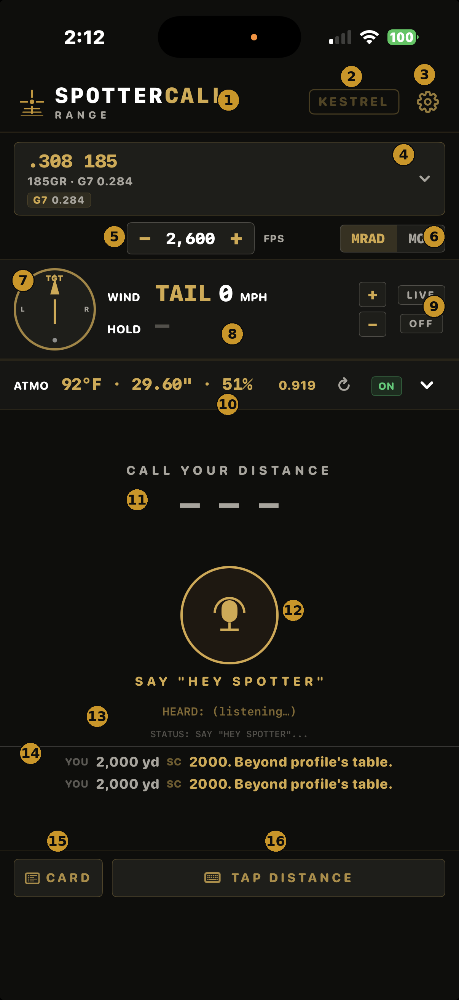
The main screen — current build, ready for the call.
This is the whole app on one screen. The numbers below match the gold badges on the screenshot. For each control: what it is, when it's lit, and how you use it.
The one rule that matters: the rifle at the top and the distance you call are the only two things SpotterCall can't figure out for itself. Get those two right and every number on this screen is working for you.
1
SpotterCall · Range
The app you're in. RANGE is the mode — live calls, live conditions, your rifles.
2
KESTREL button
Connects your Kestrel 5700-family weather meter over Bluetooth. Dim outline = not connected. Gold dot = connected and streaming live conditions into the ATMO row (10) and every call. Third state: SCANNING… — the app is looking for your remembered unit (auto-reconnect). It gives up after a few tries and settles back to dim; tap to retry. First time, you pick your unit from the My Gear list and the app remembers it by name from then on. Tap to connect, tap again to disconnect. You don't need one — without it the app pulls local weather automatically. Full steps in section 10.
3
Gear — Voice Settings
Opens the Voice Settings sheet: the Commander voice, HANDS-FREE MODE (the "Hey Spotter" wake word), voice preview, and CSV data export. Details in section 11.
4
The rifle bar
The profile every call is computed for — cartridge, bullet weight, ballistic coefficient (here ".308 185 · 185GR · G7 0.284"). Tap it to open the rifle list: profiles are grouped by shooter; your own builds live under CUSTOM at the top; ADD YOUR RIFLE is at the bottom. By voice, say "switch to 185" — the word "switch" is required (see the number rule). If the rifle shown isn't the one in your hands, fix it before you shoot.
5
MV stepper (− FPS +)
Your muzzle velocity. Tap − / + to true it to your real impacts: hitting a touch high everywhere, come down a few fps. A green +N or red −N appears when you've moved off the profile's baseline, and trued calls get tagged ADJ. This is the quick truing tool — the full one is TRUE MODE in the DOPE card (section 8).
6
MRAD / MOA toggle
Your hold units, app-wide. Dial in mils? MRAD. Scope turrets in MOA? MOA. Every call, the DOPE card, and the wind hold follow this switch.
7
Wind dial
A compass with your target at the top (TGT). The dial shows where the wind is coming FROM, relative to your shot — straight up = headwind, from the right side = wind off your right shoulder. Spin it to set direction manually, or let a connected sensor drive it. When a sensor is streaming, the dial turns blue and becomes a read-only mirror — it shows the measured wind and can't be dragged; that's live truth, not a stuck control. To go back to manual, release the sensor in My Gear (or tap KESTREL off) and the dial returns to gold and your hands. If your direction of fire isn't set yet, a SET BEARING nudge appears here — that's your cue (section 10).
8
WIND & HOLD readout
The wind the solution is using, in plain words: "TAIL 11 MPH" — an 11 mph tailwind. Under it, HOLD is what that wind does to your shot at the last distance you called: "L 0.2 MRAD" — hold two-tenths left. When the wind is switched OFF (9), HOLD shows a dash. Every wind number on every screen comes from the same resolved wind — the dial, these pills, the HOLD, and the spoken call always agree.
9
Wind + / − and ON/OFF
The + / − buttons nudge wind speed by 1 mph. The ON/OFF button is the master switch: green ON = wind is in your solution. OFF = elevation and spin drift only, no wind hold. If your calls suddenly have no wind number, look here first.
10
ATMO row
The air your solution is flying through: temperature, station pressure, humidity, and the air-density factor. Fed by local weather automatically, or by a connected Kestrel (2) for right-here-right-now truth. The circular arrow refreshes; the green ON/OFF toggles atmospheric correction; the chevron expands the detail.
11
The solution readout
The heart of the screen. Before your first call it reads CALL YOUR DISTANCE with dashes. After a call: your rifle and load across the top, the distance big (700 YD), elevation in white-and-gold (U 5.5 MRAD = up 5.5), and — when wind is ON — your wind hold under the line (L 0.2 = hold 0.2 left).
12
The mic button
Tap it and say your distance — "seven hundred yards." The ring pulses while it listens. You'll hear the call in your earbud and see it land on the readout at the same time.
13
HEARD and STATUS lines
The app's ears, in writing. HEARD echoes what it understood ("HEARD: 600 yards") — your on-screen proof it got your number. STATUS walks through what it's doing: TAP TO CALL DISTANCE → LISTENING… → PROCESSING…, or SAY "HEY SPOTTER"… when hands-free is armed.
14
Range log
Every call from this session stacks up here — YOU 700 yd · SC U 5.5 MRAD · L 0.2 — so you can glance back at what you've already been given without calling it again.
15
CARD
Opens your DOPE card — the full drop table for the selected rifle, live for today's conditions. Section 7.
16
TAP DISTANCE
A number pad for when talking isn't the move — loud firing line, quiet bench. Type the yards, hit CALL, same spoken solution. Section 6.
3 · Your First Call in 60 Seconds
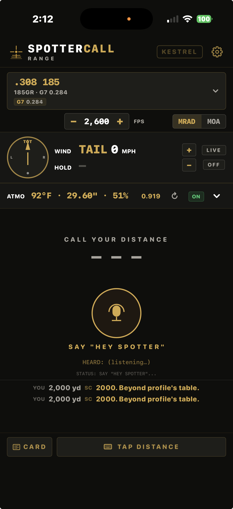
Before: CALL YOUR DISTANCE.
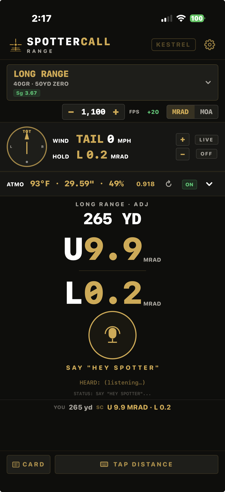
After: 265 yards — up 9.9, left 0.2. (ADJ: velocity trued +20.)
Tap the rifle bar and pick your rifle. (Don't see yours? Build it in 30 seconds — section 9.)
Earbud in. Tap the gold mic button.
Say your distance: "three hundred yards"
Listen: "Three hundred yards. Up one-point-two. Left point-one." The same numbers land on the readout.
Dial or hold what it said. Fire when ready.
4 · How to Read a Call — and the Number Rule
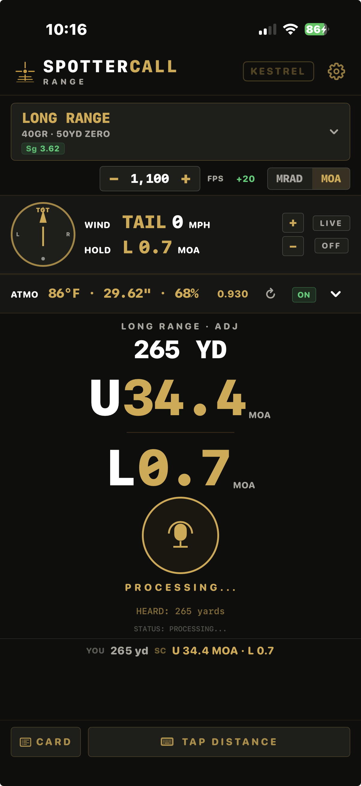
HEARD: 265 yards → PROCESSING… — the app confirms your number before it answers.
"Six hundred yards. Up 4.2. Left 0.1."
Distance comes first, every time. That's not filler — it's your safety check. Your ears confirm the app heard the number you actually called before you touch the turret.
Up 4.2 — dial or hold 4.2 (MRAD or MOA, whichever your toggle says) of elevation.
Left 0.1 — hold one-tenth into the wind, to the left.
THE RULE: if the distance it says back is not the distance you called — don't shoot the hold. Call it again. A right answer to the wrong question is a miss you didn't earn.
The number rule — a bare number is always a distance
Say a number by itself and SpotterCall treats it as a distance. Every time."185" is a 185-yard call. "308" is a 308-yard call. The app never guesses that a number might mean a rifle — one word, one meaning.
Call outside the selected profile's table and it tells you straight, distance first: "2000. Beyond profile's table." — or — "25. Below profile's table." No invented hold, ever. An honest "can't" beats a confident wrong number.
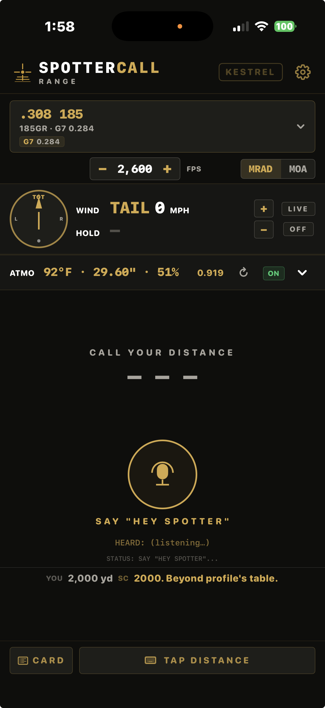
"2000. Beyond profile's table." — distance echoed, no invented hold.
DON'T — old habit, retired: on earlier builds, saying a bare caliber number like "185" could switch rifles. That no longer works. A bare "185" is now a 185-yard distance call. To change rifles by voice, say "switch to 185" — the word "switch" is what changes the profile. If you shoot with someone still on the old habit, tell them before they wonder why their rifle "changed itself" to a 185-yard call.
5 · Hands-Free — "Hey Spotter"
With your hands on the rifle, tapping is one hand too many. Turn on HANDS-FREE MODE (gear → HEY SPOTTER: ON) and the app listens for its name.
Gear icon → HEY SPOTTER: ON. The status line under the mic changes to SAY "HEY SPOTTER"…
Get behind the rifle. When you're ready: "Hey Spotter — eight hundred yards"
The status line walks through DISTANCE? → LISTENING… → PROCESSING… and the call comes back in your ear: "Eight hundred yards. Up 7.4. Left 1.1." No hands.
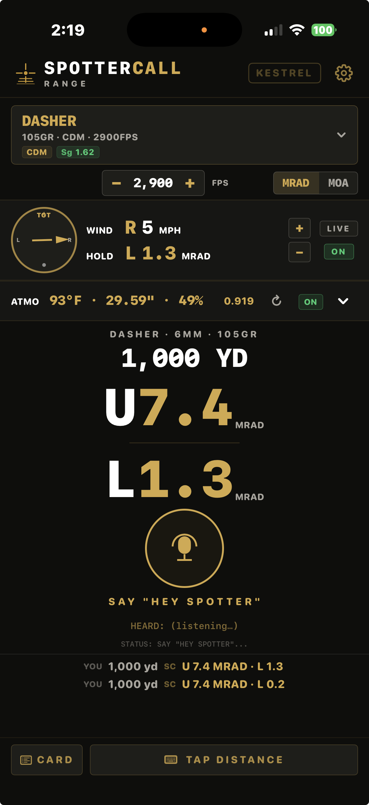
Hands-free armed, call delivered: Dasher at 1,000 — up 7.4, left 1.3, wind in the solution.
The wake phrase to remember is "Hey Spotter." Speak it, pause a half-beat, then the distance. The number rule applies here too: a bare number after the wake phrase is a distance; "Hey Spotter — switch to 185" changes rifles.
6 · TAP DISTANCE
Loud line? Quiet bench where you'd rather not talk? Tap TAP DISTANCE (bottom right), type the yards on the number pad, hit CALL. You get the exact same spoken solution and readout — just typed instead of spoken.
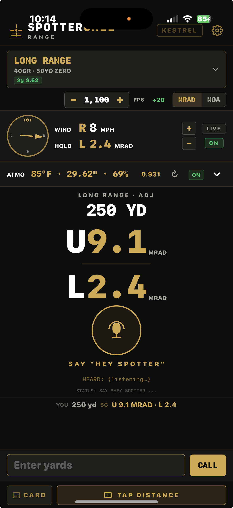
Typed or spoken — same call. (This one's tagged ADJ: a trued velocity.)
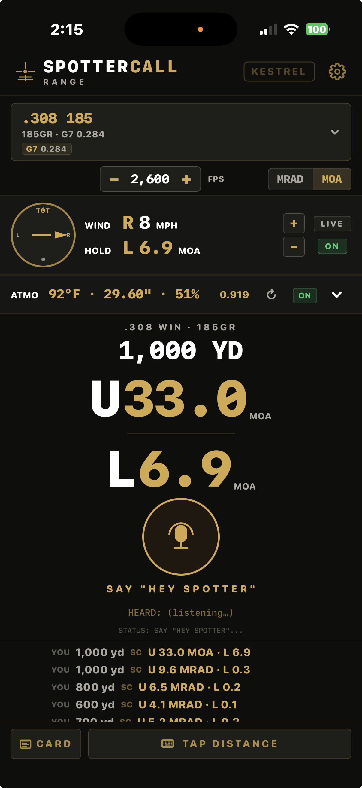
MOA mode — flip the toggle, every number follows. The range log keeps both: U 33.0 MOA is the same call as U 9.6 MRAD.
7 · Your DOPE Card
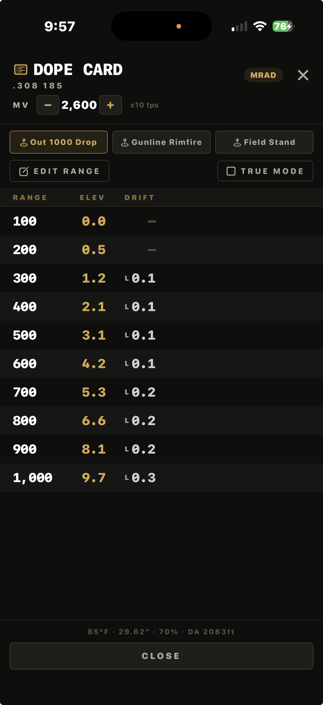
100 TO 1000 — the full table.
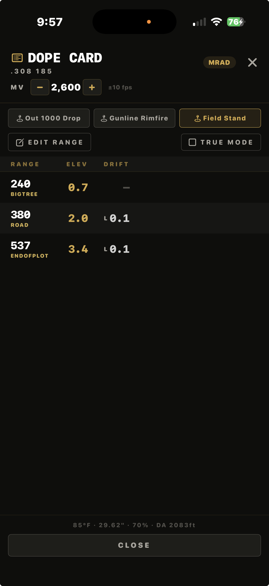
A custom Range — named chips, your distances, your landmarks.
Tap CARD for the whole drop table at a glance — the card you'd tape to your stock, except it's live: it uses your current rifle, muzzle velocity, wind, and atmosphere right now, not a printout from last season. The footer shows the exact conditions it's built on (temp · pressure · humidity · density altitude).
Three columns: RANGE · ELEV · DRIFT. DRIFT is your full horizontal hold — wind hold and spin drift merged into one number. With zero wind, the small number still showing is pure spin drift — that's the bullet's own rotation carrying it sideways, not a bug.
Range layouts — your three Range cards
The chips across the top are three Range cards, and they're yours. Each one is a named list of distances — rename it, add or remove yardages, reorder them — and the card recomputes elevation and wind for whichever rifle is active, live for today's conditions.
Your first Range comes ready. Rimfire rifles seed it 100→400 in 25-yard steps; centerfire seeds 100→1000 by hundreds. It adapts to your profile type until the first time you edit or rename it — after that it's your card and it stays exactly as you built it.
The other two read + ADD RANGE. Tap one, name it — your match course, your lease, your club — and type each distance the way the stage sheet (or the terrain) gives it to you. And you can label each distance too: type a short name and it shows right under the yardage on the card — FOOD PLOT EDGE 785, GATE POST 280.
The deer-stand play. Corner of the field 280. Food plot edge 785. Pre-set your yardages before the season, name the card for the stand, and when the moment comes you glance and hold — nothing to call out, nothing to change. Your Ranges survive closing the app; they're waiting when you climb in.
Everything else on the card works identically on a custom Range: TRUE MODE, the MV stepper, MRAD/MOA, and the conditions footer.
The MV stepper at the top of the card moves in ±10 fps steps (the main-screen stepper is fine-grain). MRAD/MOA follows your toggle.
8 · Truing — Dial It In to YOUR Rifle
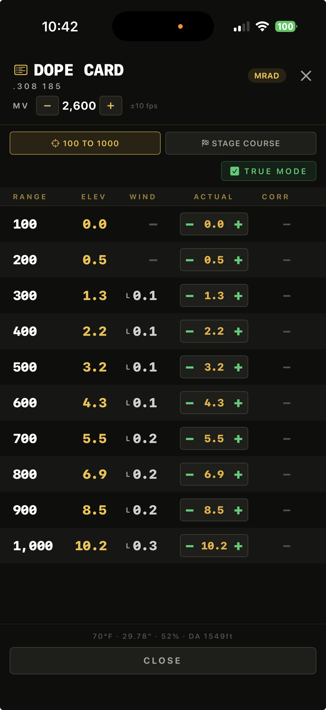
TRUE MODE — enter what you actually shot.
The built-in math gets your first shot on a pie plate. Truing is how you walk it to dead center for your gun, your load, your day. Two tools:
Quick — the FPS stepper
Shooting a touch high or low across the board? Nudge muzzle velocity on the main screen until calls match impacts. Green +N / red −N shows your offset; trued calls read ADJ.
Real — TRUE MODE
CARD → check TRUE MODE. At each distance you've shot, enter the hold you actually used in the ACTUAL column (− / + steppers). The CORR column shows the correction. Tap SAVE & CALIBRATE and SpotterCall bends its curve through your real data — calls now read CAL. Give it two distances or ten; it fits what you feed it.
Truing is session-based. It resets when you restart the app — every range day starts from the honest baseline and you re-true on the day's real conditions. That's a feature: yesterday's heat isn't today's truth.
9 · Rifles & ADD YOUR RIFLE
Tap the rifle bar to open the list. Profiles are grouped — tap a group to expand, tap a rifle to select. Your own builds live under CUSTOM at the top.
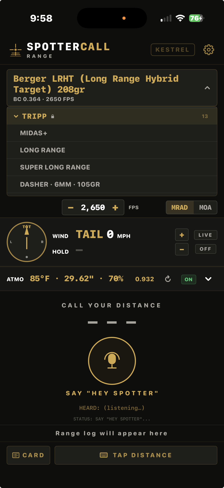
The rifle bar, open — groups expand, tap to select.
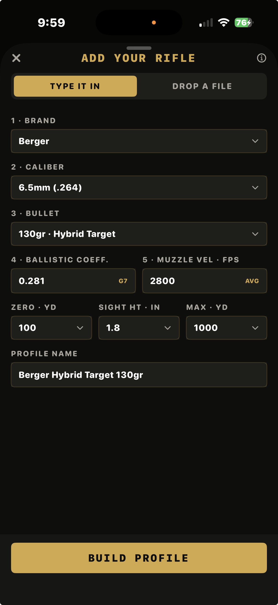
ADD YOUR RIFLE — filled in, ready to BUILD.
Switching rifles by voice
Say "switch to 185" — or the profile's name — and you'll hear the change confirmed while the rifle bar updates. The word "switch" is required. A bare "185" is a 185-yard distance call, not a rifle change — that's the number rule, and it's what keeps a distance call from ever silently swapping your profile.
Build your rifle in 30 seconds
Rifle bar → ADD YOUR RIFLE.
Pick your cartridge and bullet — the app fills in a starting BC and velocity.
Better: read the real BC and muzzle velocity off your ammo box and type those in.
Set zero distance and scope height. Name it. BUILD.
Your rifle runs on the same engine as the built-in profiles, lives under CUSTOM, and survives closing the app. True the velocity on real impacts and it only gets better.
10 · Live Weather & Wind (Kestrel — Optional)
Where your wind and weather come from
Every call needs two things beyond your rifle and distance: the air (temperature, pressure, humidity) and the wind. SpotterCall works at three levels — you get a true solution at every one of them:
Your gear
The air (ATMO)
The wind
No sensors
Local weather, pulled automatically for your location. The circular arrow in the ATMO row refreshes it.
You call it: read the flags, the mirage, the grass — spin the wind dial to the direction, tap + / − to the speed. The oldest skill in shooting, and the app does the math on your read.
Kestrel
Live, from the air you're actually standing in.
Live speed and direction at the shooter — the impeller and compass stream straight into your solution.
Kestrel + Wind Zero
Live from the Kestrel.
The full picture: Kestrel reads the wind at your position, Wind Zero's vane reads it downrange where the bullet actually flies. Setup rule: point the Wind Zero's arrow downrange, at your target — its readings are relative to where it's aimed.
No sensors is not a downgrade to guessing. The ballistics run fully on your phone either way — sensors just replace your eyeball wind call with a measured one. If a sensor drops mid-session, the app tells you (STALE — it never quietly rides old numbers) and you're back to level one, still in the fight.
Reading the wind display — one wind, everywhere
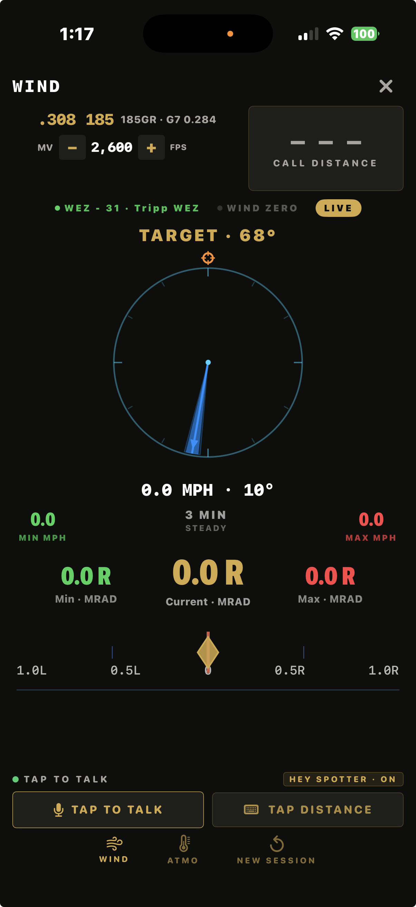
Kestrel live (green) — vane on the dial, TARGET at the top, bearing set.
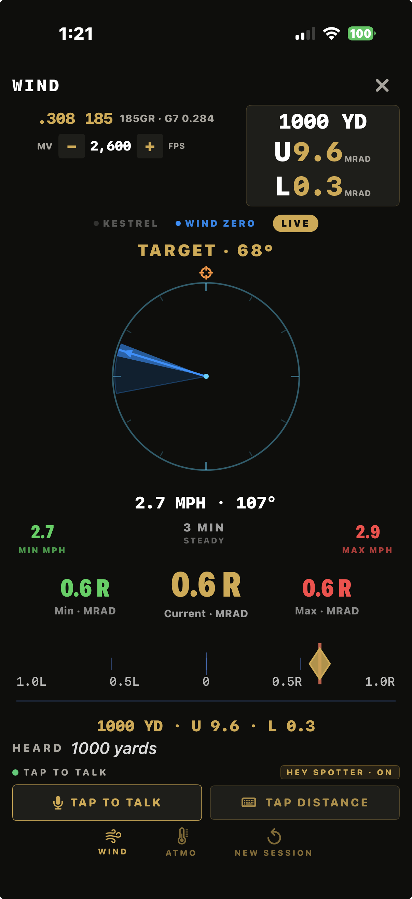
Wind Zero live (blue) — downrange wind driving the hold, 3-min min/max band.
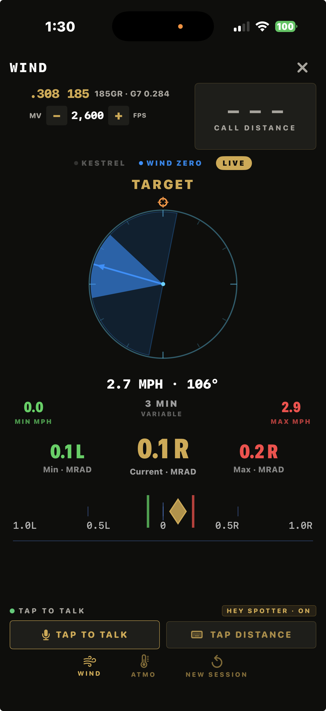
VARIABLE wind — the diamond is your current hold; the green/red marks are the 3-min swing. Hold the diamond, know the bracket.
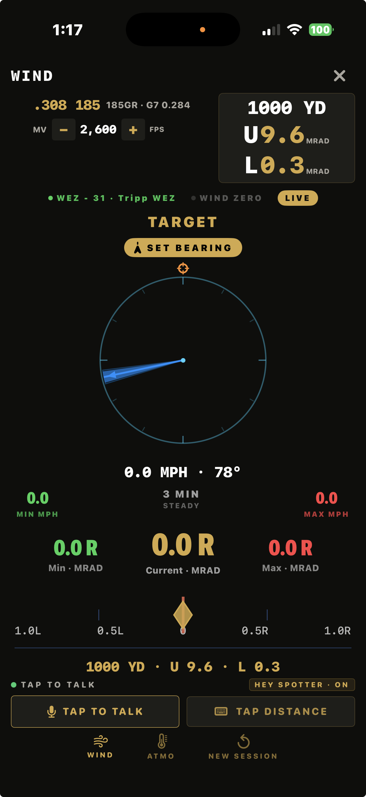
The SET BEARING nudge — live wind isn't a hold side until the app knows your line of fire.
What you see: every wind surface in the app — the dial, the pills, the HOLD readout, the spoken call — shows the same resolved wind. They can't disagree with each other, so if a number looks wrong, the question is never "which display do I trust," it's "which source is feeding it."
What it means: the panel label states the convention outright — direction is where the wind is blowing FROM (a wind FROM 270° is coming out of the west). The L/R hold is computed for your firing line — which is only true after your bearing is set.
What to do: if the pills grey out and you see STALE · STREAM LOST, the sensor stopped talking — walk back into range or power-cycle it. The app will not quietly ride old numbers; grey means "not current," and your solution says so.
Step zero — Kestrel users: calibrate the compass first
Before anything else, every session: calibrate the Kestrel's compass outdoors, away from steel and motors (Settings → Compass Cal — full walkthrough below). A calibrated compass reads true within about ±5° in every direction; an uncalibrated one can sit 80°+ off and never warn you. Two minutes, every session, no exceptions. An uncalibrated compass is also the #1 cause of the SOURCES-DISAGREE banner (below).
Step one — before you trust any live wind: set your bearing
A wind sensor knows the wind. It does not know where your target is — you have to tell it. SpotterCall owns your direction of fire: until you've set it, a SET BEARING nudge sits on the wind panel as your reminder. Say "Hey Spotter — bearing one six two" (your direction of fire, in compass degrees) at the start of every session, and again if you move to a different target line.
Why this is a safety rule, not a nicety: left/right is always relative to your shot. A hold side computed without your bearing is a hold side for somebody else's target — the speed will be right, and the shoulder can be wrong. New session, new bearing. Every time. The SET BEARING nudge is on screen precisely so you can't forget.
Connect in the app — My Gear
Turn the Kestrel on, Bluetooth enabled.
Tap KESTREL (top right). First time: the My Gear picker lists the units it can hear — pick yours. From then on SpotterCall remembers your unit by name and reconnects to that one only.
Make it yours: rename the unit something human — "Tripp Link" beats a serial number. RELEASE lets the unit go if you swap hardware or hand it to a teammate; then just pick again.
Gold dot on the button + live ATMO row = streaming. Every call from now on is corrected for the air you're actually in. Blow on the impeller and watch the numbers move.
A crowded firing line can't steal your connection. Earlier builds paired with the first Kestrel they heard — five shooters, five Kestrels, chaos. Now the app connects only to the unit you picked in My Gear, no matter how many are broadcasting at the line. If your unit drops out of range or powers off, the app handles it cleanly and picks the stream back up when it returns — no crash, no stranger's wind.
No Kestrel? No problem — SpotterCall pulls local weather automatically, and the ballistics run fully on your phone.
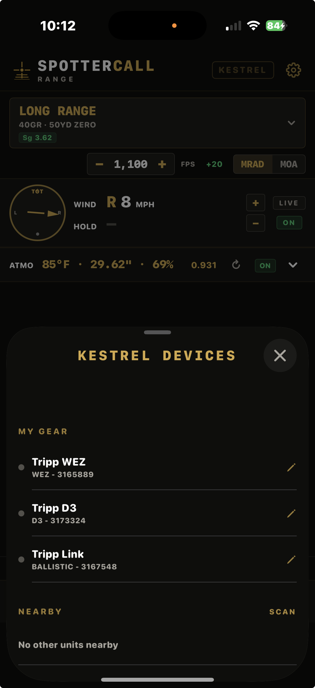
My Gear — your units, named and remembered.
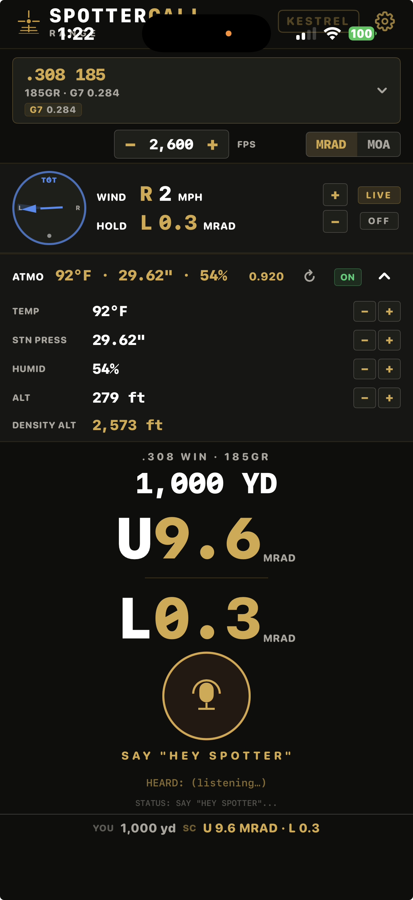
Connected and streaming — live wind, live ATMO, density altitude.
Works with the Kestrel 5700 family (5700 BALLISTIC, DROP D3, WEZ — all bench-verified). If readings look blank or odd for the first seconds after connecting, that's the warm-up filter — the app rejects bad readings rather than feeding them into your hold.
Two sensors, two winds — the SOURCES-DISAGREE banner
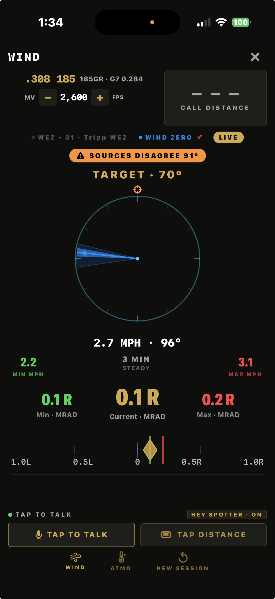
Both sensors talking, 91° apart — the app says so instead of silently picking one. (WIND ZERO pinned 📌 as the source here.)
What you see: running a Kestrel and a Wind Zero, a SOURCES-DISAGREE banner appears when the two report winds that genuinely conflict.
What it means: it's not an error. Two honest instruments in two different pieces of air — the wind at your shoulder is not always the wind downrange. But a big disagreement can also mean a setup problem.
What to do: first check setup — is the Wind Zero's arrow pointed downrange at your target, and is the Kestrel's compass calibrated (step zero)? If both check out, the disagreement is real wind: look at the flags between you and the target and favor the reading from the air your bullet actually flies through — usually downrange.
Set your Kestrel up right — five minutes, once per session
SpotterCall reads your Kestrel's live wind speed and compass wind direction straight off the unit. That means one Kestrel setting actually matters to your calls — the compass — and it's the one that goes bad quietly. Do this before the first shot, in order:
Calibrate the compass — outdoors, away from steel. On the Kestrel: Settings → Compass Cal, hold the unit vertical, rotate slowly per the prompts. Do it away from vehicles, tripods, motors, and the gun line. A fan motor or a truck bed can pull the compass 80° or more off — and it won't tell you.
Capture Direction of Fire. Tgt → DoF → Capture. Hold the unit vertical and point the BACK of it at your target, then capture.
Capture the wind. Tgt → WD → Capture. Point the BACK of the unit into the wind and hold it there 5+ seconds — it averages while you hold.
Set WD Chg to "w/ DoF." Settings → Wind Direction → w/ DoF. When you swing to a new target, the stored wind rotates with your direction of fire, so the relative wind stays true.
Units: degrees. Matches what SpotterCall displays.
THE classic mistake: captures use the BACK of the unit — the side facing you when you read the screen points at you, not the target. Point the face into the wind and everything stores 180° backwards. If your wind calls feel like polar opposites of reality, this is why.
What SpotterCall actually reads
Your call uses
The Kestrel's own screen uses
Live vane wind speed, raw compass wind direction, live atmosphere — plus the bearing you speak. Steps 2–4 above are not in your solution.
Its stored Tgt / WD / DoF captures. Set them right (steps 2–4) or ignore that screen — a stale capture makes the unit's solution useless as a cross-check, even while your SpotterCall calls stay correct.
Why bother with steps 2–4 at all? Cross-checking. When your Kestrel's own solution screen and SpotterCall agree, you know the whole chain is honest. A Kestrel with stale captures will "disagree" with a correct call and shake your confidence right when you need it.
11 · Voice Settings
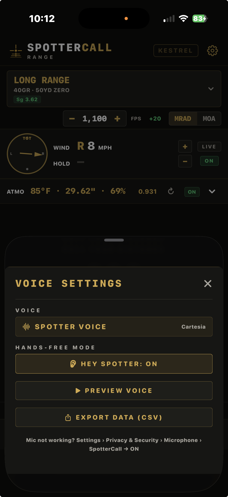
The gear → Voice Settings.
VOICE — COMMANDER. The voice in your ear. Tap PREVIEW VOICE to hear it before you're on the clock.
HANDS-FREE MODE — HEY SPOTTER: ON/OFF. The wake-word switch. ON = the app listens for "Hey Spotter" so you never touch the screen. OFF = mic only listens when you tap it.
EXPORT DATA (CSV). Your session's calls as a spreadsheet — for your DOPE book or your load notes.
The fine print at the bottom is your mic rescue line: Settings › Privacy & Security › Microphone › SpotterCall → ON.
12 · On Your Wrist
SpotterCall has an Apple Watch companion — pick your rifle, call your distance, get the hold on your wrist when your phone's in your pack. screenshots coming
13 · If Something's Off
Symptom
Fix
Mic does nothing / never hears you
iPhone Settings › Privacy & Security › Microphone › SpotterCall → ON. Same path for Speech Recognition.
"Hey Spotter" doesn't wake it
Check the gear → HEY SPOTTER is ON. Speak the phrase, brief pause, then the distance.
Said "185" and got a 185-yard call, not my 185 profile
That's the number rule working: a bare number is always a distance. Say "switch to 185" to change rifles (section 4).
The distance is outside the selected rifle's table — honest refusal, not a bug. Check you've got the right profile loaded for the shot you're taking.
Call has no wind number
The wind master switch is OFF (green ON button in the wind panel). Tap it ON.
KESTREL won't connect
Bluetooth ON on both devices, Kestrel within ~30 ft, and make sure another app (Kestrel LiNK) isn't holding the connection — only one app can talk to it at a time. Still nothing? Open My Gear — you may be remembered to a different unit. RELEASE and re-pick yours.
Wind dial is blue / can't drag it
A connected sensor is driving the dial — blue = live mirror, read-only by design. Want manual control back? My Gear → RELEASE (or tap KESTREL off) and the dial returns to gold and drag works again.
Wind pills greyed out — STALE · STREAM LOST
The sensor stopped talking. Walk back into BLE range or power-cycle the unit; the stream picks back up on its own. Grey means "not current" — the app won't ride old numbers.
SOURCES-DISAGREE banner
Kestrel and Wind Zero are reporting conflicting winds. Check the WZ arrow points downrange at your target and the Kestrel compass is calibrated; if setup's clean, it's real — favor the downrange read (section 10).
Kestrel wind direction seems way off / backwards
Recalibrate the compass outdoors away from steel and motors, and remember captures use the BACK of the unit (section 10).
Wind hold is on the wrong shoulder
First check: did you set your bearing this session? The SET BEARING nudge on the wind panel means you didn't. Say "Hey Spotter — bearing" + your direction of fire. Then check the Wind Zero's arrow is pointed at your target. Side calls are relative to your shot — the app can't know your target line unless you tell it.
It heard the wrong distance
It told you — the distance is read back first, and HEARD shows it in writing. Don't shoot that hold; call it again.